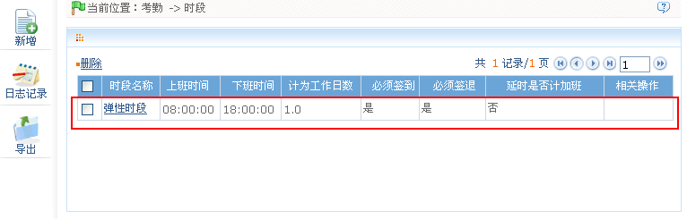
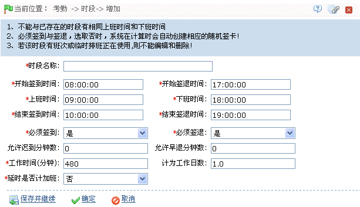

7.2 考勤时段
设置考勤过程中可能用到的时段，并配置各项参数信息，是人员考勤时间设置的最小单位。如上/下班时间，允许迟到/早退时间，是否必须签到/签退，设置允许签到/签退的时间范围，休息时间设置，加班设置等。
在班次设置之前，必须将所有可能用到的时段设置完毕，即考勤时段设置，设置了考勤时段才能设置排班，各项考勤参数设置才会有意义。
单击【考勤】 【时段】，进入时段页面：
【时段】，进入时段页面：

系统默认设置一个名为【弹性时段】的考勤时段。
弹性时段：弹性时段是系统默认设置的一个考勤时段。弹性时段的设置中，工作延时不会作为加班计算，不计算迟到、早退、旷工。弹性时段的计算按偶次打卡数计算考勤，并自动生成其日报的行数，如果有4次记录，则当天的日报有2行，如果有6次记录，则日报有3行，并且以每段的签退时间减去签到时间作为其该段的出勤时间。
-
 新增时段
新增时段
1、单击时段页面上的【新增】图标，进入新增时段页面：

根据需要设置各参数，具体设置方法如下：
时段名称：任意字符，最多20个字符组合。
开始签到/签退时间、结束签到/签退时间：必须输入，该时间段的签到/签退有效范围，在此范围外的签到/签退记录为无效记录。开始签退的时间和结束签到的时间不能有重合的时间。
上班时间、下班时间：设置上班和下班时间；必须输入。
设置是否必须签到和签退：在选择的时间范围内，决定在上下班的时候是否必须签到和签退，如果需要签到/签退，则选择为“是”；否则，选择为“否”。
允许迟到和早退的分钟数：指在规定的上、下班时间点内，允许迟到、早退多长时间才开始计算为迟到、早退，且必须在上班签到或下班签退的有效时间范围内才生效。
例如：设置允许迟到分钟数为5，若上班时间为9:00，甲9：03签到，乙9:06签到，这时甲没有迟到，因为他的签到时间距上班时间没有超过5分钟，乙迟到6分钟，因为他的签到时间距上班时间超过5分钟了。
工作时间：计算此考勤时段设置的上下班时间内的分钟数，系统不支持自动计算。
计为工作日数：指每个班次记为多少个工作日，如果这里设置了数值，统计时程序将按照设置数值统计工作日，否则按考勤规则里的设置统计。
延时是否计加班：在计算加班时，若延时是否计加班选“是”，则加班时间为延时时间（下班打卡时间与时段结束时间之差）+该时段内包含固定加班时间（分钟）。若延时是否计加班若为“否”则该项为0。
2、设置完成后，单击【确定】按钮，保存并返回（考勤）时段页面，此时时段列表中，将显示刚新增的时段。
（1）、上班时间到下班时间的时间间隔不能超过系统设置的最大/最小时段时间长度，请参看7.1 考勤参数中的设置；
（2）、不存在开始与结束时间相同的时段。
（3）、时间的设置，请参见附录1 常用操作中的3. 选择时间。
1、单击时段名称或“相关操作”下对应的【编辑】，进入时段编辑页面。
2、根据需要修改相关设置，具体操作同新增时段一致。修改完成后，单击【确定】按钮保存。
-
删除时段
1、选中时段，单击时段列表左上方的【删除】按钮，或直接单击“相关操作”下的【删除】按钮，进入删除时段的确认界面。
2、单击【确定】删除该时段，并返回时段页面。
 注意：系统默认存在的弹性时段不可删除。
注意：系统默认存在的弹性时段不可删除。